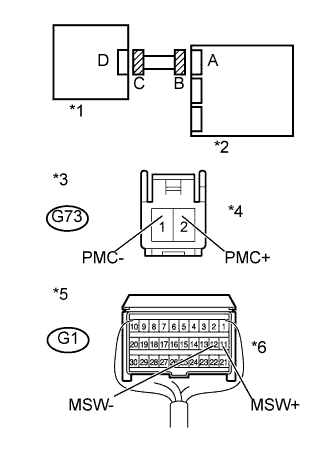
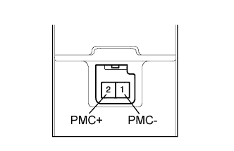

DTC B1651/33 Неисправность ручного выключателя системы SRS |
| Код DTC | Условие обнаружения DTC | Неисправный участок |
| B1651/33 | Выполняется одно из следующих условий:
|
|
| 1.ПРОВЕРЬТЕ ЖГУТ ПРОВОДОВ ПАНЕЛИ ПРИБОРОВ (ЦЕНТРАЛЬНЫЙ БЛОК УПРАВЛЕНИЯ СИСТЕМЫ SRS - ЦИЛИНДР ВЫКЛЮЧАТЕЛЯ СИСТЕМЫ SRS) |
|  |
Выключите зажигание.
Отсоедините провод от отрицательного (-) вывода аккумуляторной батареи и подождите не менее 90 секунд.
Отсоедините разъемы от центрального блока управления системы SRS и цилиндра выключателя системы SRS.
Подсоедините провод к отрицательному (-) выводу аккумуляторной батареи и подождите не менее 2 секунд.
Измерьте напряжение в соответствии со значениями, приведенными в таблице.
| Контакты для подключения диагностического прибора | Положение переключателя | Заданные условия |
| G73-2 (PMC+) - масса | Зажигание включено | Менее 1 В |
| G73-1 (PMC-) - масса | Зажигание включено | Менее 1 В |
Выключите зажигание.
Отсоедините провод от отрицательного (-) вывода аккумуляторной батареи и подождите не менее 90 секунд.
Измерьте сопротивление в соответствии со значениями, приведенными в таблице ниже.
| Контакты для подключения диагностического прибора | Условие | Заданные условия |
| G73-2 (PMC+) - G73-1 (PMC-) | Всегда | Менее 1 Ом |
Разомкните механизм предотвращения срабатывания, встроенный в разъем B (Нажмите здесь).
Измерьте сопротивление в соответствии со значениями, приведенными в таблице ниже.
| Контакты для подключения диагностического прибора | Условие | Заданные условия |
| G73-2 (PMC+) - G73-1 (PMC-) | Всегда | 1 МОм или более |
| G73-2 (PMC+) - масса | Всегда | 1 МОм или более |
| G73-1 (PMC-) - масса | Всегда | 1 МОм или более |
| *1 | Цилиндр выключателя системы SRS |
| *2 | Центральный блок управления системы SRS |
| *3 | Вид спереди разъема со стороны жгута проводов: (к цилиндру выключателя системы SRS) |
| *4 | Разъем C |
| *5 | Вид сзади разъема со стороны жгута проводов (к центральному блоку управления системы SRS) |
| *6 | Разъем B |
|
| ||||
| OK | |
| 2.ПРОВЕРЬТЕ ЦИЛИНДР ВЫКЛЮЧАТЕЛЯ СИСТЕМЫ SRS |
|  |
Снимите цилиндр выключателя системы SRS (Нажмите здесь).
Измерьте сопротивление в соответствии со значениями, приведенными в таблице ниже.
| Контакты для подключения диагностического прибора | Положение переключателя | Заданные условия |
| 2 (PMC+) - 1 (PMC-) | Выключатель системы SRS включен (боковая передняя подушка безопасности пассажира активна) | 360- 440 Ом |
| 2 (PMC+) - 1 (PMC-) | Выключатель системы SRS выключен (передняя подушка безопасности пассажира неактивна) | 90 - 110 Ом |
|
| ||||
| OK | |
| 3.ПРОВЕРЬТЕ ЦЕНТРАЛЬНЫЙ БЛОК УПРАВЛЕНИЯ СИСТЕМЫ SRS |
 |
Подсоедините разъемы к центральному блоку управления системы SRS и цилиндру выключателя системы SRS.
Подсоедините провод к отрицательному (-) выводу аккумуляторной батареи и подождите не менее 2 с.
Установите замок зажигания в положение ON (ВКЛ) и подождите не менее 60 секунд.
Сбросьте коды DTC, сохраненные в памяти (Нажмите здесь).
Выключите зажигание.
Установите замок зажигания в положение ON (ВКЛ) и подождите не менее 60 секунд.
Проверьте коды DTC (Нажмите здесь).
| *1 | Цилиндр выключателя системы SRS |
| *2 | Центральный блок управления системы SRS |
|
| ||||
| OK | ||
| ||